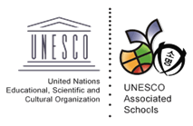

UN이란?
전쟁 방지와 평화 유지를 위해 설립된 국제기구를 말한다.
주요 활동은 평화유지활동, 군비축소활동, 국제협력활동으로
나눌 수 있고 주요기구와 보조기구, 전문기구로 구성되어 있다.

유네스코 학교란?
유네스코학교는 평화, 자유, 정의, 인권과 같은 UN의 전문기구 중 하나인
유네스코의 이념을 공교육 체계
안에서 다양한 교육 활동을 통해 앞장서
실천하는 학교를 의미한다.
평화와 인권, 문화간 이해, 지속가능발전 등
유네스코 이념과 정신을
교육 현장에서 실천하는 데 목적을 두고 있다.
소명여자고등학교는 2012년부터 유네스코학교에 가입하여
유네스코의 이념을
교육과정에 담아내려하고 공모전이나
세계시민교육을 하는 등 다양한 노력을 하였다.
더 자세한 내용이 알고싶다면 소명여자고등학교 공식 홈페이지를 방문하면 된다.
